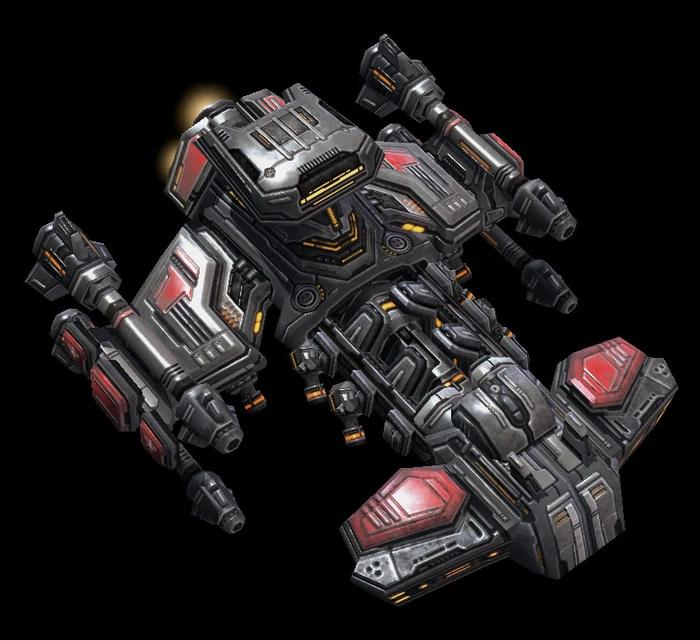

Star Craft II - Humanity
Resourceful humans have diverse technologies and styles.
Humans are a race that came to the Kepulu region later. They are descendants of a colonial expedition that set off from the earth centuries ago. Humans do not have the high technology of the Protoss, nor the biological power of the Zerg. They rely on strong and diverse units to win on the battlefield.
Exclusive features:
Liftable building
Transforming units such as Viking fighters and evil wolves
Many viable strategies, including infantry and mechanized forces
IMPORTANT UNIT
MARINE CORPS
Light infantry capable of attacking air and ground targets. Although infantry is fragile, it can exert a powerful force in the human sea tactics.

SIEGE TANK
Heavy armor units can be converted to siege mode, causing huge area damage.

BATTLECRUISER
A huge battleship that can launch fierce attacks on ground and air units.
